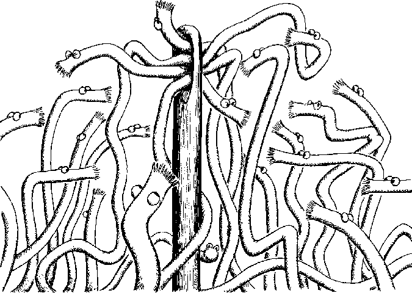

Next: Author's Abstract
SRC Research Report 21
Evolving the UNIX System Interface to Support Multithreaded Programs
September 28, 1987 (reformatted for electronic distribution August 28, 1997)

Systems Research Center
130 Lytton Avenue
Palo Alto, CA 94301
http://www.research.digital.com/SRC/
© 1987 Digital Equipment Corporation. All rights reserved

A slightly-edited version of Part I of this report appeared as ``Evolving the
UNIX System Interface to Support Multithreaded Programs'' in Proceedings
of the Winter 1989 USENIX Technical Conference, January 1989, pages 393-404.
This edition of August 28, 1997 is identical to the original except for layout
differences resulting from switching from Scribe to LaTeX.
Next: Author's Abstract
Paul McJones
8/28/1997